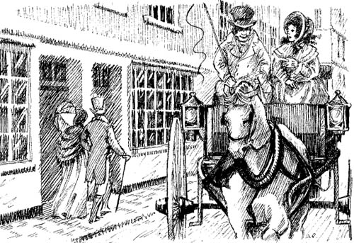

‘Tại sao anh lại nói dối em?’
Sáng thứ Sáu, Catherine dậy rất sớm. Cô ra khỏi giường và nhìn ra ngoài cửa sổ. Trời đang nắng, nhưng bầu trời vẫn còn một số đám mây.
Khoảng mười một giờ, trời bắt đầu mưa.
‘Nhà Tilney sẽ không đến,’ cô buồn bã nói với bà Allen.
‘Đường phố đang ướt,’ bà Allen đáp. ‘Nhưng mây đang tan. Trời sẽ sớm hết mưa thôi.’
Lúc mười hai giờ rưỡi, trời lại bắt đầu hửng nắng. Catherine đang ở trong phòng trên lầu. Cô nhìn ra ngoài cửa sổ. Cô thấy hai cỗ xe ngựa đi trên phố.
‘Isabella, anh trai cô và anh Thorpe đây rồi!’ cô nói. ‘Nhưng em không đi chơi với họ được. Em phải chờ nhà Tilney.’
Rồi Catherine nghe thấy tiếng động. Ai đó vừa chạy cầu thang lên.
‘Nhanh vào!’ anh John Thorpe vừa chạy vừa la. ‘Chúng ta sẽ đi Lâu đài Blaize, tiểu thư Morland.’
‘Lâu đài Blaize? Đó là gì vậy?’ Catherine hỏi.
‘Đó là lâu đài lâu đời nhất nước Anh!’
‘Em không đi được,’ Catherine trả lời. ‘Em đang đợi anh Tilney và chị Eleanor. Chúng em sẽ đi dạo ở miền quê. Em chắc chắn họ sẽ đến sớm thôi.’
‘Họ sẽ không tới đâu,’ anh John Thorpe nói. ‘Sáng nay tôi mới gặp họ. Họ đang lái xe ra khỏi Bath.’
Catherine vô cùng bất ngờ. Cô không nói thêm gì cả. Nhưng cô đã tin lời anh John Thorpe.
Isabella bước vào phòng.
‘Catherine yêu quý của em ơi, em phải đi cùng bọn chị,’ cô ta nói. ‘Em sẽ thích Lâu đài Blaize lắm. Nó cổ kính và đáng sợ lắm! Cứ như trong một câu chuyện kinh dị!’
Vài phút sau, Catherine đã ngồi cạnh anh John Thorpe trên xe của anh ta. Isabella đi cùng James Morland trên chiếc xe còn lại. Hai chiếc xe đi dọc phố Pulteney.
‘Ôi, dừng lại, dừng lại!’ Catherine la lên. ‘Kia là ông Tilney và cô Tilney. Em phải nói chuyện với họ.’

Anh John Thorpe cười phá lên. Nhưng anh ta không dừng con ngựa lại.
Nhà Tilney nghe thấy giọng của Catherine. Họ dừng lại và quay người.
‘Sao anh nói dối em thế, anh Thorpe?’ Catherine hỏi. ‘Nhà Tilney đâu có rời khỏi Bath đâu!’
Anh John Thorpe lại cười. Nhưng anh ta không dừng con ngựa lại.

Lúc đầu, Catherine rất buồn vì nhà Tilney. Nhưng rồi cô lại bắt đầu nghĩ về Lâu đài Blaize. Đó là một tòa lâu đài rất cũ. Catherine thích những câu chuyện kinh dị. Những câu chuyện ấy thường kể về những tòa lâu đài cổ cùng những bí ẩn của chúng. Chúng là những câu chuyện đáng sợ. Nhưng Catherine lại thích những câu chuyện đáng sợ!
Sau hai tiếng đồng hồ, anh James Morland từ trên xe mình hét: ‘Dừng lại, Thorpe! Dừng lại!’
Anh John Thorpe dừng ngựa lại.
‘Có chuyện gì vậy?’ anh ta hỏi.
‘Chúng ta phải quay về thôi,’ anh James đáp. ‘Bây giờ là ba giờ rồi. Hôm nay chúng ta không đi Lâu đài Blaize được. Quá trễ mất rồi. Lâu đài Blaize quá xa mất.’
‘Vậy thì quay về thôi. Chẳng sao cả,’ anh John Thorpe đáp.
Thế là họ quay về Bath.
Catherine dùng bữa tại nhà của nhà Thorpes. Sau đó, họ chơi bài.
Chốc lát sau, Catherine về lại Pulteney. Bà Allen nói với cô:
‘Ông Tilney và cô Tilney đến đây sáng nay đấy,’ bà Allen nói. ‘Họ muốn gặp con.’
Catherine rất buồn. Cô lên giường đi ngủ và khóc.
Mục lục
- Trang tiêu đề
- Trang bản quyền
- Mục lục
- Ghi chú về tác giả
- Ghi chú về câu chuyện này
- Các nhân vật trong câu chuyện
- 1 Catherine đến Bath
- 2 Những người bạn mới của Catherine
- 3 John và James
- 4 Một buổi vũ hội tại Upper Rooms
- 5 ‘Tại sao anh lại nói dối tôi?’
- 6 Catherine và gia đình Tilney
- 7 Isabella đang yêu
- 8 Đội trưởng Frederick Tilney
- 9 Isabella và James
- 10 Tu viện Northanger
- 11 ‘Cô Morland thân mến của tôi!’
- 12 Một chuyến thăm đến Woodston
- 13 Một lá thư từ Isabella
- 14 Catherine trở về nhà
- 15 ‘Em sẽ lấy anh chứ?’